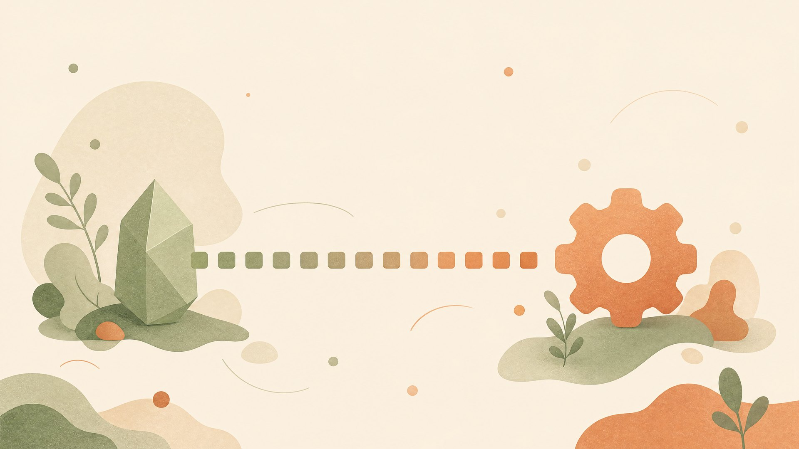
RURIX × GODOT · 里程碑收官 · 初赛 DEMO
让自研 GPU 语言栈 Rurix,接管真实引擎 Godot 的渲染 pass——opt-in、可回退、全程证据驱动 · 2026-07-13 签署收官
2026-07-02 开工,07-13 正式签署收官(status: closed)。引擎源码不入库,全部改动走 tracked patch 栈;任何性能与画质结论,只认仓库内 measured_local 证据 JSON。
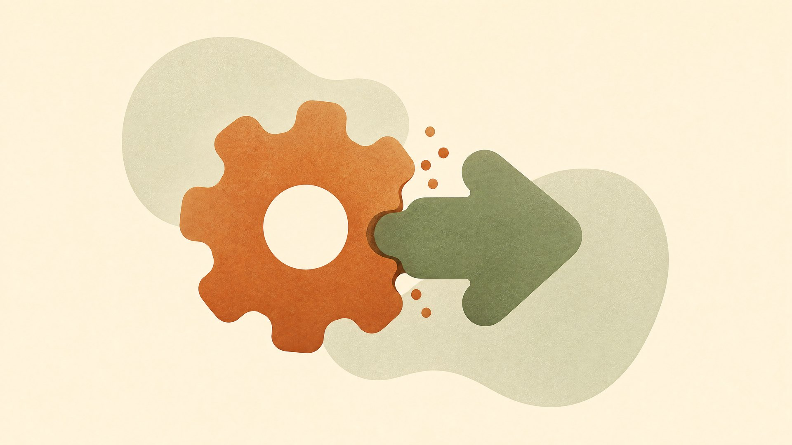
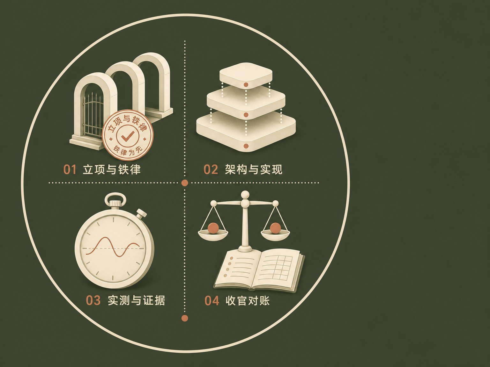
GRX = Godot / Rurix 工程集成里程碑:验证一个自研 GPU 语言/编译器栈,能否进入生产级引擎的真实渲染帧。靶场:Godot 4.7-dev · Windows D3D12 · Forward+。
strict close-out 门(G-GRX-5)开工即固化在 perf_gate.py;输入若试图覆盖任一阈值,直接 FORMAT FAIL——门不可被悄悄放宽。
7 场景 FPS 几何均值,Rurix / baseline 需达 1.5 倍
p95 帧时间平均降幅不低于 30%
任何单场景 FPS 不得低于 baseline 的 95%
另设第二道独立的门——GRX-025 默认启用成本门:单 pass engaged 场景 FPS ratio ≥ 0.95 才有资格默认启用。两道门,两种问题:「有没有变快」与「有没有代价」。
「不在没有 evidence JSON 的情况下,宣称 1.5x 或任何性能提升。」
前四个子里程碑不写一行加速代码:探明工具链、把模块以 patch 形式立起来、验证加载与回退、搭好基准场景骨架。
SCons / MSVC / SDK / DXC / Godot tree 全量探测;缺件输出明确 SKIP 原因;不安装、不改全局工具链——缺 launcher 宁可给 null,也不给一条注定失败的命令。
modules/rurix_accel 以 patch 入栈;规范构建命令固化;本机 MSVC C1001 ICE 用单任务 wrapper 绕过;exe / dll 的 SHA-256 全部归档。
DLL present 与 missing 两条启动路径都要验证:缺 DLL 时退出码 0 并留下 fallback 日志;此时若反而出现 session-ready 标记,判定失败——回退路径本身也要被证明。
基准生成器 + 7 场景逐场景独立 load evidence(failure_count=0);004b 将负载真实化到 workload v2 / v2.3——门的数学与阈值不变。
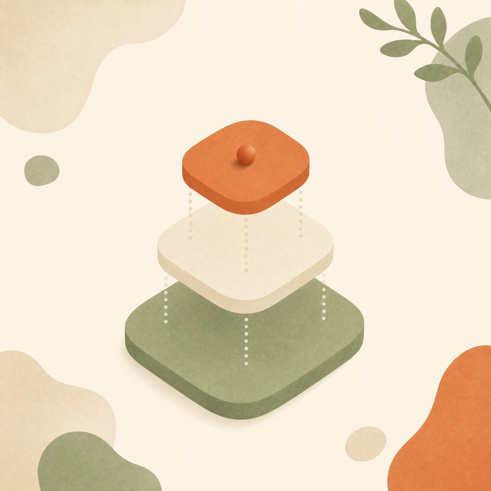
| 层 | 组件 · 版本 · 位置 | 要点 |
|---|---|---|
| 引擎快照 | Godot 4.7-dev @ external/godot-master | 整树 git-ignored;只经 patch 栈改动,快照永不被写 |
| 补丁栈 | 41 个 tracked patch · 收官栈 0001-0029,0040-0048 | scratch 副本上逐个 git apply;SHA-256 审计链 |
| 引擎构建 | SCons(workspace venv)+ MSVC 19.44(VS2022 · 14.44.35207) | C1001 ICE → num_jobs=1 单任务,一次数小时 |
| 桥 DLL | cargo build -p rurix-godot → rurix_godot.dll | cdylib · C ABI v1 · 8 个 rxgd_* 导出 |
| Shader 工具 | DXC 1.9.2602.24 + dxv(env RURIX_DXC_DIR) | 签名验证套件;PATH 上的 dxc 不作数 |
| 自建 LLVM | llc 22.1.7 @ H:\llvm-dxil(env RURIX_LLC) | rx→DXIL 试验路线;env 未设即拒真跑 |
| 容器打包 | generate_rd_container.py --all → GRSC v2 容器 | DXIL+RTS0+反射;10 容器 · 3 fail-closed · 自检 555 项 |
| 实测机器 | RTX 4070 Ti · Win11 · 1920×1080 · vsync off | 7 场景 ×(300 warmup + 2000 sample);exe/dll SHA-256 入档 |
# ① 引擎:拷快照 → git apply 38 patch → SCons(num_jobs=1) py -3 ci/godot_rurix_scratch_build.py --patches 0001-0029,0040-0048 # ② 桥 DLL(cdylib) cargo build -p rurix-godot # ③ 每 pass:DXC 编译 → dxv 验证 → rurixc 生成 RTS0 dxc -T cs_6_0 -E main -Qstrip_debug -Fo tonemap.dxil tonemap_apply.hlsl # ④ 打包 GRSC 容器 + 独立自检 py -3 rd-native-pipeline/generate_rd_container.py --all # ⑤ 实测两腿 + strict 门(1.5 / 0.30 / 0.95) py -3 bench/run_benchmark_scenes.py --leg rurix --profile full --pass-matrix rd_native_all5.json py -3 bench/perf_gate.py --strict results.json
rendering/rurix_accel/enabled = true rendering/rurix_accel/dll_path = "…/target/debug/rurix_godot.dll" rendering/rurix_accel/passes/tonemap/backend = 2 # 0 关 · 1 shim · 2 rd_native rendering/rurix_accel/passes/tonemap/rd_container_path = "target/grx/rd_containers/tonemap.rd_container.bin" # 其余 4 个 pass 同型;默认全 0,bench 经 --pass-matrix JSON 写入
// 数学规格;运行时 canonical = DXC 编译的 HLSL 桥,数学须与此等价 kernel fn tonemap_apply_linear_srgb( src_color: Texture2D<f32>, dst_color: RWTexture2D<f32>, source_width: usize, source_height: usize, exposure: f32, white: f32, luminance_multiplier: f32, t: ThreadCtx<1>, ) { // one thread per RGBA channel lane let lane_count = source_width * source_height * 4; let lane = t.global_id(); if lane < lane_count { let channel = lane % 4; let value = src_color[lane]; if channel < 3 { let scaled = value * luminance_multiplier * exposure; let clamped = if scaled < 0.0 { 0.0 } else { scaled }; let srgb = if clamped < 0.0031308 { 12.92 * clamped } else { 1.055 * powf(clamped, 1.0 / 2.4) - 0.055 }; dst_color[lane] = srgb; // linear → sRGB } else { dst_color[lane] = value; } // alpha 透传 } } // dxc -T cs_6_0 → tonemap.dxil 4436 B · dxv PASS · RTS0 152 B ← // rurixc::binding_layout(b0 = 7 dword @ 根参数 0)· 容器 verify 49/49
// 帧渲染 callsite:三态选择子 == 2 才试 rd_native if (D3D12Hooks::get_singleton() != nullptr && rurix_tonemap_linear_subset_compatible // LINEAR 子集判定 && !tonemap.use_auto_exposure && (int)GLOBAL_GET( "rendering/rurix_accel/passes/tonemap/backend") == 2) { /* … */ } // 首帧惰性建管线:GRSC 容器原样消费;任一步失败 latch,不逐帧重试 bytes = FileAccess::get_file_as_bytes(container_path); shader = rd->shader_create_from_bytecode(bytes); // DXIL+RTS0 原样 pipeline = rd->compute_pipeline_create(shader); // RootSig + PSO // 帧内录制:t0 = HDR 源(SRV),u0 = LDR 目标(UAV),28 B 根常量 uniform_set = UniformSetCacheRD::get_cache(shader, 0, Uniform(UNIFORM_TYPE_TEXTURE, 0, p_source_color), Uniform(UNIFORM_TYPE_IMAGE, 1, p_dest_color)); cl = rd->compute_list_begin(); // 主 RenderingDevice 帧图内 rd->compute_list_bind_compute_pipeline(cl, pipeline); rd->compute_list_bind_uniform_set(cl, uniform_set, 0); rd->compute_list_set_push_constant(cl, push_constants, 28); rd->compute_list_dispatch(cl, (w + 7) / 8, (h + 7) / 8, 1); rd->compute_list_end(); // barrier 由 draw graph 自动插 // 没录上就走原生 —— fail-closed: if (!rurix_recorded_tonemap && !rurix_recorded_tonemap_rd_native) tone_mapper->tonemapper(color_texture, dest_fb, tonemap); // 回退原因入五值遥测:compile_failed / validation_failed / // unsupported_device / visual_diff_failed / manual_disabled
| PASS | 内容 | 状态 | ENGAGED GEOMEAN |
|---|---|---|---|
| tonemap | 色调映射 compute 替换(LINEAR 子集) | 达门 · byte-exact | 0.9959 |
| ssao_blur | SSAO SMART 模糊替换 | 达门 · byte-exact | 0.9950 |
| taa_resolve | TAA resolve dispatch 替换 | 达门 · ±1 LSB | 0.9906 |
| particles_copy | 粒子 copy(no-userdata 子集) | 达门 · ~1 ULP | 0.9945 |
| cluster_store | 聚簇灯光 bake 的 store 段替换 | 达门 · byte-exact | 0.9993 |
| gpu_culling | GPU 视锥剔除 → indirect 计数 | strict success · 净零 | — |
| luminance_reduction | 自动曝光亮度归约(桥路打样) | bridge strict success | — |
| fused_post_chain | luminance + tonemap 融合链 | keep_disabled(净零) | — |
| instance_compaction | 可见实例压实 | unblocked_deferred | — |
| indirect_args | indirect 参数生成 | unblocked_deferred | — |
| material_sorting | 材质排序遥测切片 | telemetry-only | — |
| descriptor_cache | descriptor-heap ring-fence | always-on(非 pass) | — |
| pso_prewarm | session 建立时 PSO 预热 | 自动触发(非 pass) | — |
五个 rd_native pass 全部越过 0.95 门槛(0.9906–0.9993)——按设计仍 default disabled,启用是逐项目显式 opt-in。gpu_culling:strict success 且字节级保图,但该 bench 口径下高水位 == 满计数,净 draw 削减为 0——如实记「净零」,不包装成收益。
gpu_culling 的 device-removal 崩溃墙横跨三代实现,07-13 一夜连破;上游 bug 复现包(2 个 MRP + issue 草稿)已入库,按治理规则待 owner 复核后对外提报。
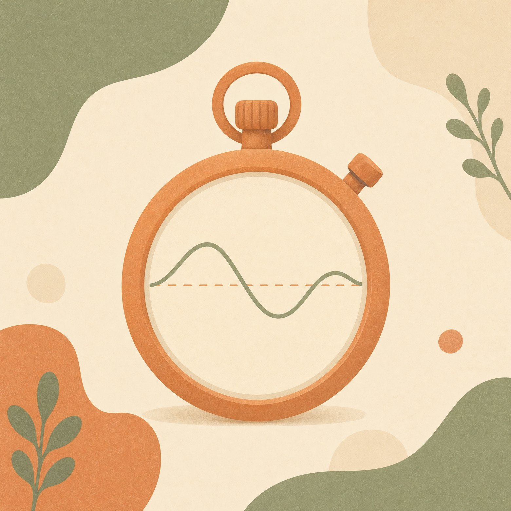
未开任何 Rurix pass 的原生构建 · RTX 4070 Ti @1080p · vsync off;基线三轮演进(初版场景过轻已废弃 → v2 → v2.3),旧基线全部留档、不混用。
7 场景几何均值,close-out 对照基准
同夜连跑 3 次全量的单场景波动(v2.3 轮收敛至 ≤6.0%);<8% 的单场景差异不足以单独支撑结论,判定只走 strict gate。
同一 exe,7 条串行全量腿;每场景 ≥1 pass 真实 engaged,由一次性 active marker 验证。p95 比值 geomean 1.0178(帧时间量化口径,不作宣称)。
五 pass 全开的总代价 ≈ -0.6%,画面保持(后页)
即使五个 engaged pass 成本归零,总提升不超 ~6.7%(GPU 时间戳逐 pass 量化)
Rurix 未在任何实测中快过原生——如实归档,阈值一字未改
NOT MET
G-GRX-5 strict 1.5× 性能门,如实归档「结构性不可达」——三阈值与 perf_gate.py 一字未改、未放宽。是归档不可达,不是降门。全程 performance_claim=none。
GRX-024 三腿捕获(baseline A / 重跑 A′ / 全开 B)@960×540,固定 60fps 第 600 帧;先用 A/A′ 量化场景自身的非确定性 floor,再谈 A/B 差异。下图为 all5 全开腿的真实输出。
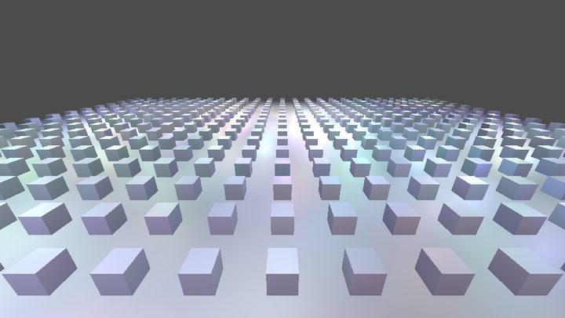
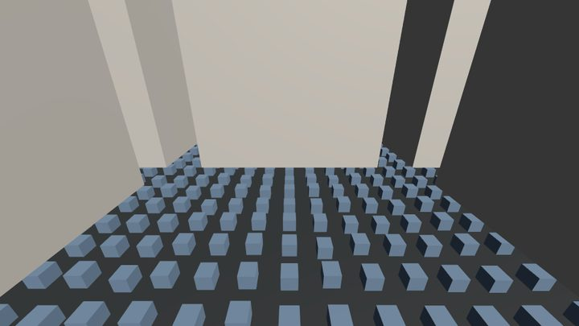
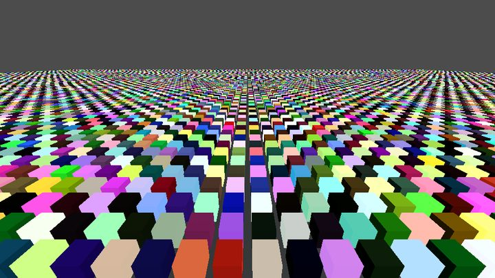
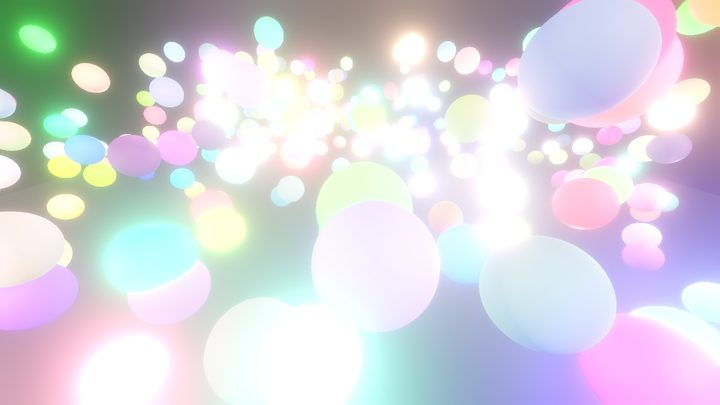
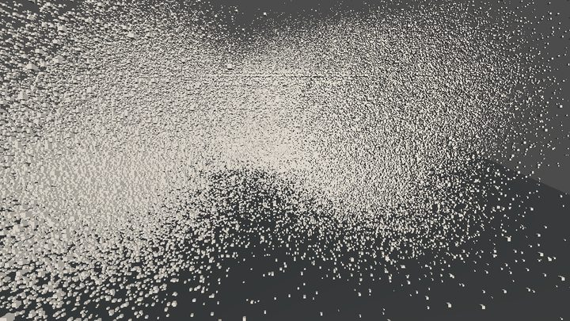
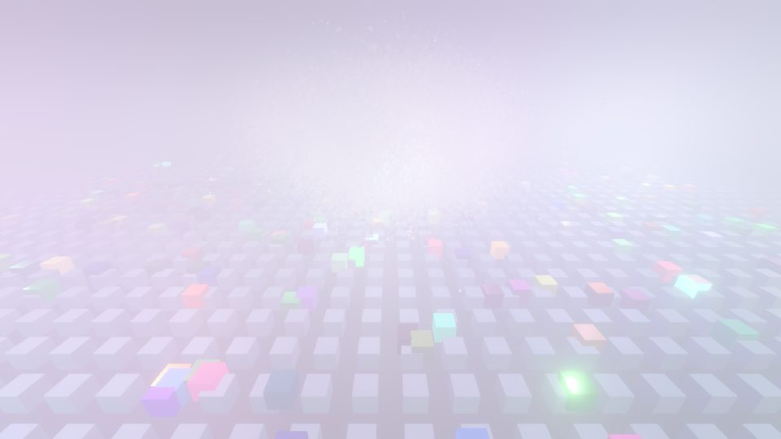
判读:4 场景逐字节一致;海量网格仅 0.2% 像素差 1 个 LSB(8-bit 舍入);粒子与混合场景的差异不超其自身两次 baseline 重跑的波动 floor,无可归因于 rd_native 的偏差。
一体开工:契约三件套 + DXIL compute lowering + 冒烟/探针/bench harness + rurix-godot crate(84 文件,+14259 行)7513364f
纹理线打通:rurixc 上游 dx.Texture 形态 + LLVM 本地 patch,DXIL 工具链 blocker 破除7e19e2db
首个 pass close-out(tonemap)+ workload v2 负载真实化 + evidence 级基线(3 run 取中位)91f5723d
Tier1 三 pass 证据链重签;Route B 启动:RD 原生容器格式逆向,生成器 49/49 自检 PASS2a5d9d95
零 patch 引擎内实测门 PASS:Rurix 容器经 RD 原生 pipeline 真机执行,~1 ULP3812ae5e
轴上标注即对应 commit,均可在仓库回放核验;当日同步落档 GRX-025 默认启用矩阵与上游 bug 复现包(2 个 MRP + issue 草稿)。
下一步:要过 1.5×,必须替换占帧 GPU 时间 ≥33% 的 bucket(Render Opaque Pass 级)——016/018 已解封,上游 MRP 待复核提报。
签署 · 白栀 · 2026-07-13
GRX_CONTRACT §8.1 · status: closed
GRX · Rurix × Godot 初赛 Demo——全部结论可在仓库 evidence JSON 逐条回溯;门未降,账已清。